四位主要人物分别展示正面、侧面、背面、全身动作及脸部特写；另附完整半身表演图。场景补齐家庭公共空间、便利店、夜间房间与储存点状态。
本轮按“半身”理解需求中的“伴生”。图像为 AI 生成的设定研究；人物外形沿用已有提案。三视图尚未经尺寸标定，不能直接作为建模工程图。
正面 · 侧面 · 背面 / 全身动作 / 脸部特写
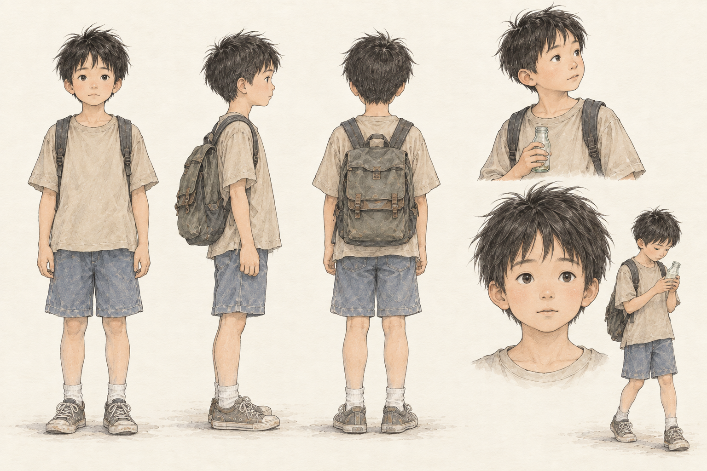
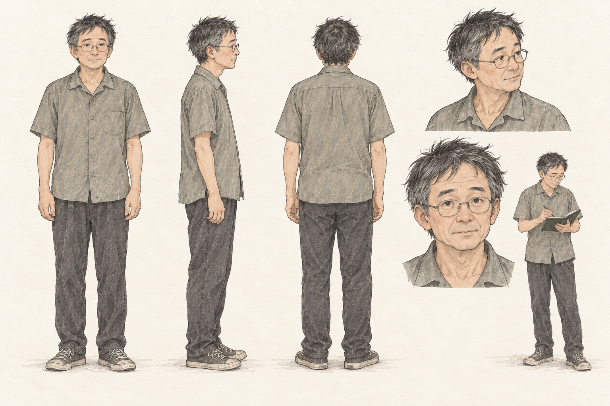
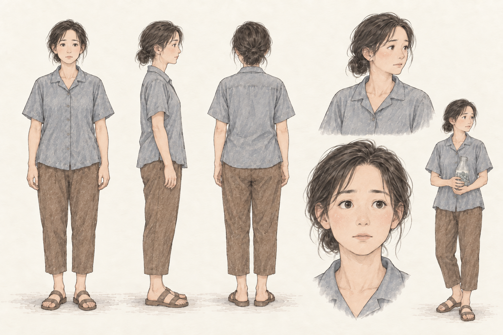
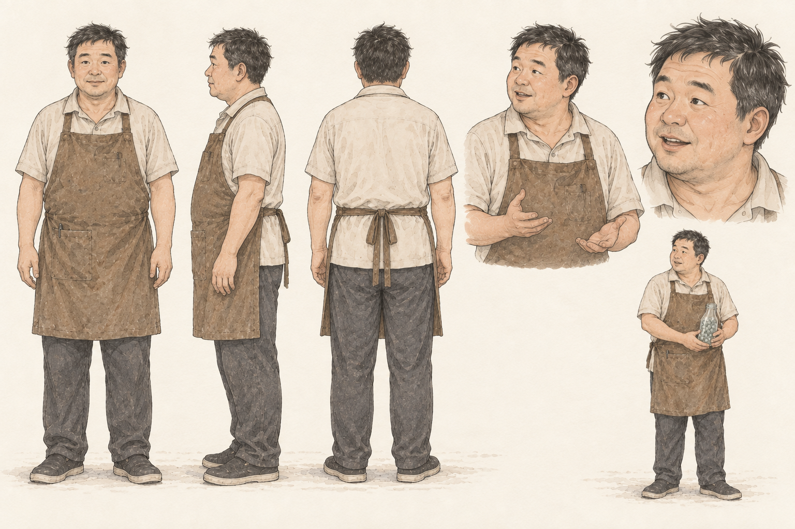
展示头部至腰部、双手及持物关系。对应顺序：左上池子、右上管理员、左下池子妈、右下便利店老板。
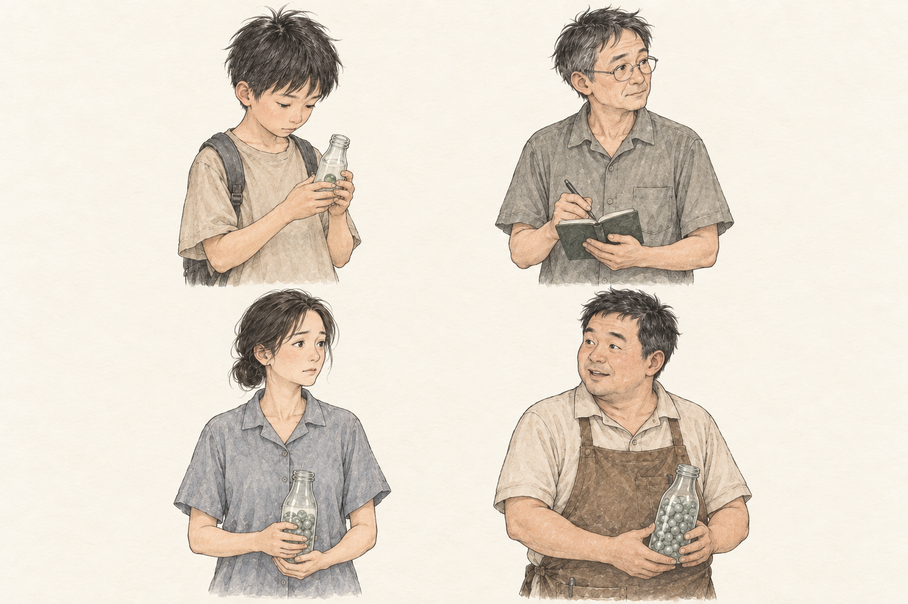
补充母子对话与关门动作所需的空间。门口、房间和公共区域的关系为美术提案；正式分镜仍需核对机位。
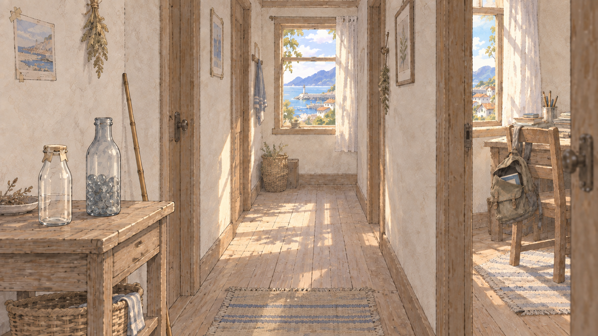
门内老板与门外池子之间的对话空间，保留学生经过的通道。货架、招牌与建筑形制均为提案。
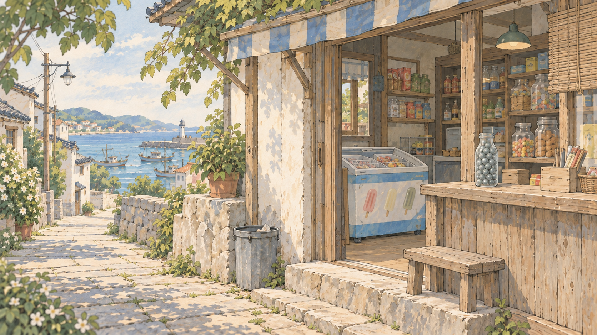
沿用日景参考补充夜间照明，检查半开书包、床、桌面瓶子与单颗绿球。
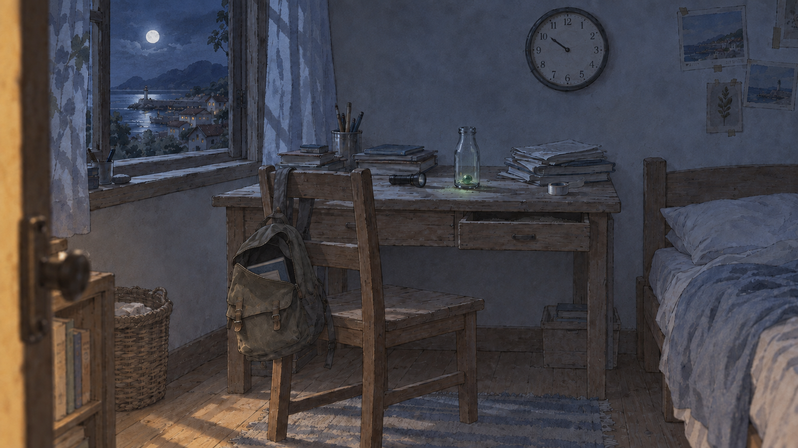
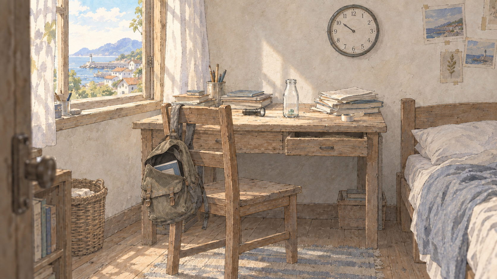
以既有场景为基准，熄灭绿光，补充倒瓶与散落灰球。木牌文字仍需后期排版。
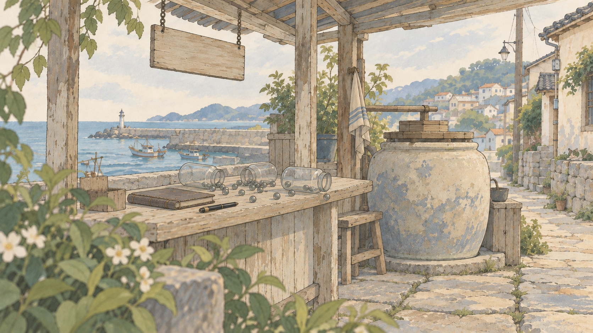
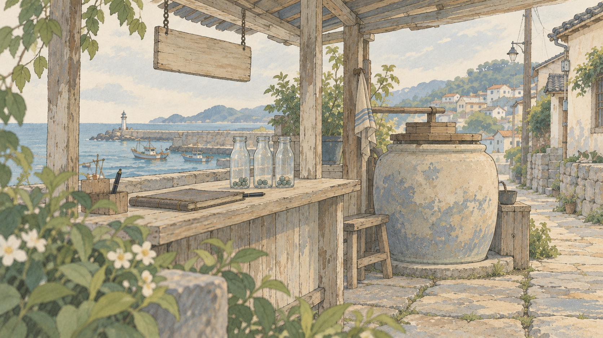
保留故障残留与倒下木牌，恢复底部绿光。当前为空场景状态研究，角色行动镜头仍待制作。
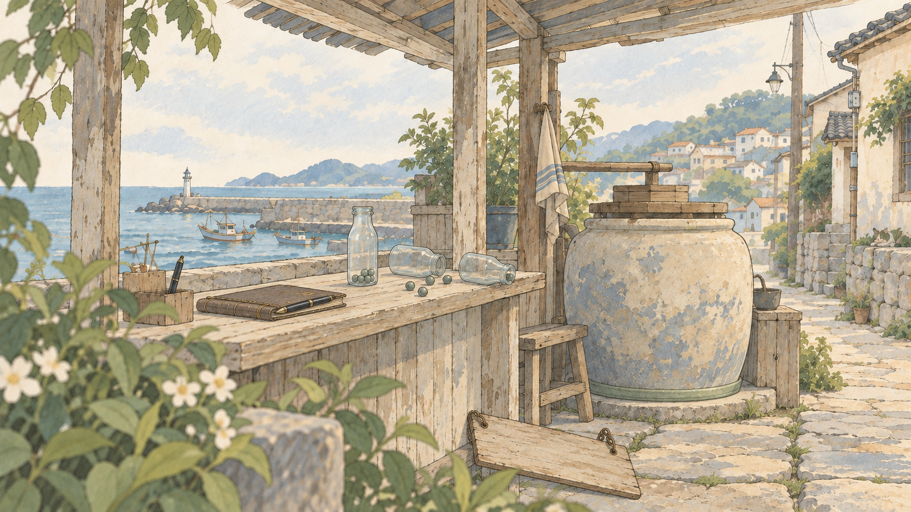